User Research, Competitive Analysis, Sketching, Wireframing, Documentation
Role
Background
Challenge
Creating a conversational UI for Yelp* leveraging their implementation of Machine Learning system to improve user's experience when ordering food online, especially getting food recommendations.
Problem
It is labor intensive and time-consuming to use Yelp's current platform. Instead of being able to search using nonspecific words for individual dishes, such as “spicy” or “soupy” they are forced to use a convoluted search process and navigate through reviews to find information specific to the dishes they may be considering.
Constraints
- Using BTown Menu* as an entry point
- Focusing on college student only
*Disclaimer: This is a class project with simulated scenarios. We have no affiliation with either Yelp or BTown Menu.
Research
To better understand our target users
We spoke with several Indiana University Students and sent out an online survey to general college students to get responses on following issues:
- What's the usual process they went through when finding food recommendations online?
- What is lacking from current Yelp platform?
- What's their priorities when making food orders?
To better understand finding/ordering food online
We examined both Yelp & BTown Menu's current platform and their potential competitors such as zomato and foodpanda to gain more knowledge on:
- What's the possible processes of getting food recommendations online currently?
- What's Yelp's advantage over other competitors?
To better understand existing solutions
We looked at a few conUI for food delivery such as Ozlo and Marsbot to know:
- What information and how is it provided to the users?
- How is the search / filtering process shown in a conversational format?
Insight
From our research, we gathered following insights:
User Behavior
- Users do not always know exactly what food or dish they want to order, but may have an idea, such as something "soupy".
- Users who regularly use online food ordering platform tend to make repeated order.
- Price is the top priority to corcern for most users.
Current Platform
- Yelp is at best with its huge amount of user ratings and reviews, and it is something we should keep in mind of and take advantage of with our conUI solution.
conUI
- Using conUI ordering food is indeed more efficient than using other platforms.
- A more personalized conversation would give users a better and more engaging experience.
Design Concepts
Based on the given prompt and our insights from research, we came down to some main concepts with our conUI solution.
Providing Specific Dish Information
This is a direct response to users' frustration toward current platform which shows restaurant-based choices. By showing specific dishes, it saves users the tiring process of going through each restaurant's data and the abundance of reviews to find something specifically matching their needs.
**Note: Under the assumption that dish-specific information can be extracted from user reviews through Yelp's machine learning algorithm.
Suggested Responses & Open-Ended Input
With suggested responses, on one hand it improves the personalization of the bot by showing options pertinent to the user. The messages shown would be customized for each user, and change time by time based on user's past decisions. On the other hand, it provides guidance for the user and therefore is able to simply the onboarding process.
Meanwhile, leaving the option for user to manually input messages gives the user control and ensures the "conversation-feel" with the bot.
Simplifying process with conUI & past orders
- Note: Under the assumption that dish-specific information can be extracted from user reviews through Yelp's machine learning algorithm.
Initial Sketches
Below are a few workflow chart we came up with during the initial ideation. They showed how the conversation between the bot and the user would unfold.
Workflow 1
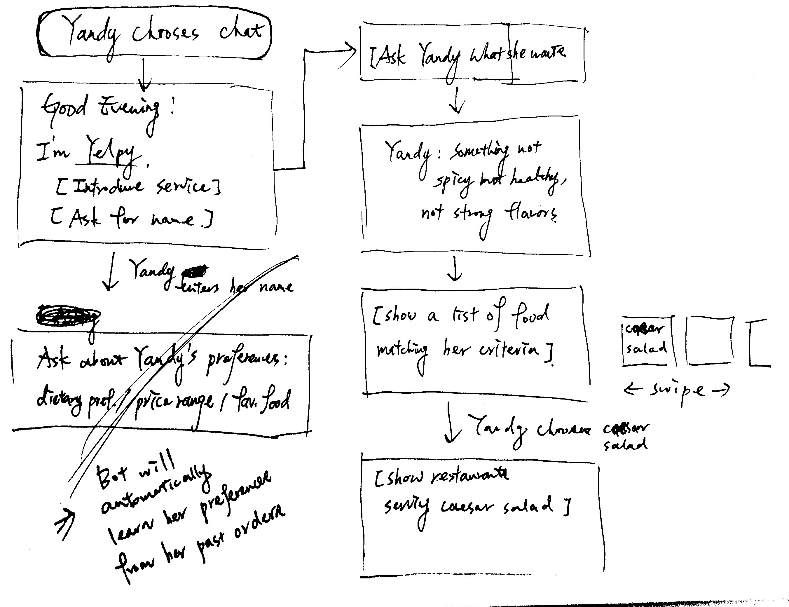
Scenario: The user has just started using the bot for the first time.
We once considered asking for users’ preferences when they first start the app, but later decided it’s unnecessary to do so, as the bot can learn their preferences based on previous choices/orders.
Workflow 2
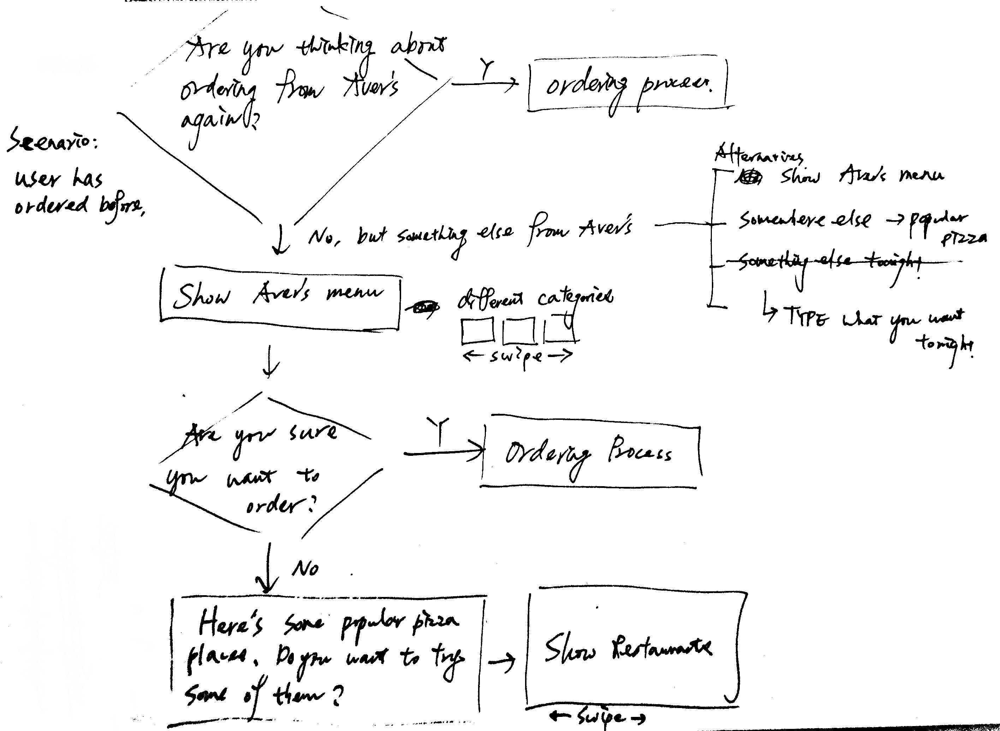
Scenario: The user has ordered before, and the bot would ask him/her if he/she wants to make the same order again.
We first only focused on the scenario where the user does not want to order the same dish but something else from the same restaurant, but later also considered other alternatives.
Low-fi Prototype
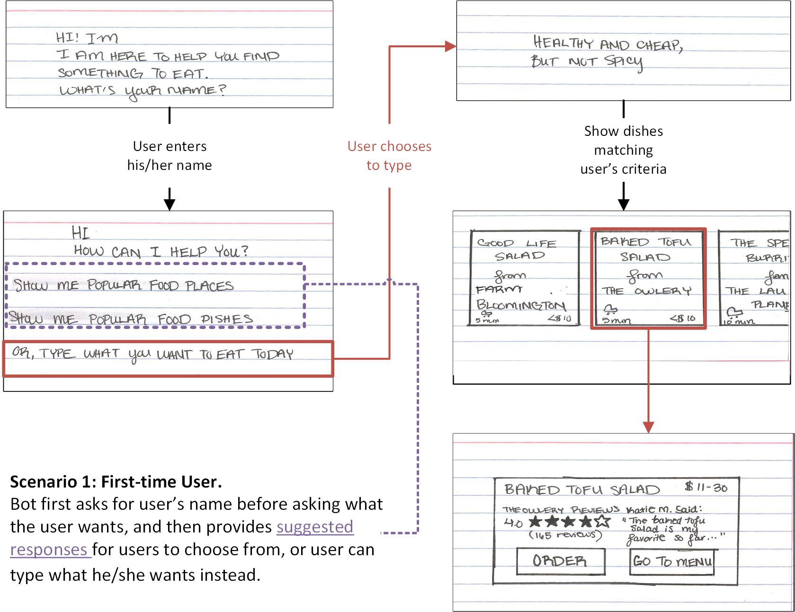
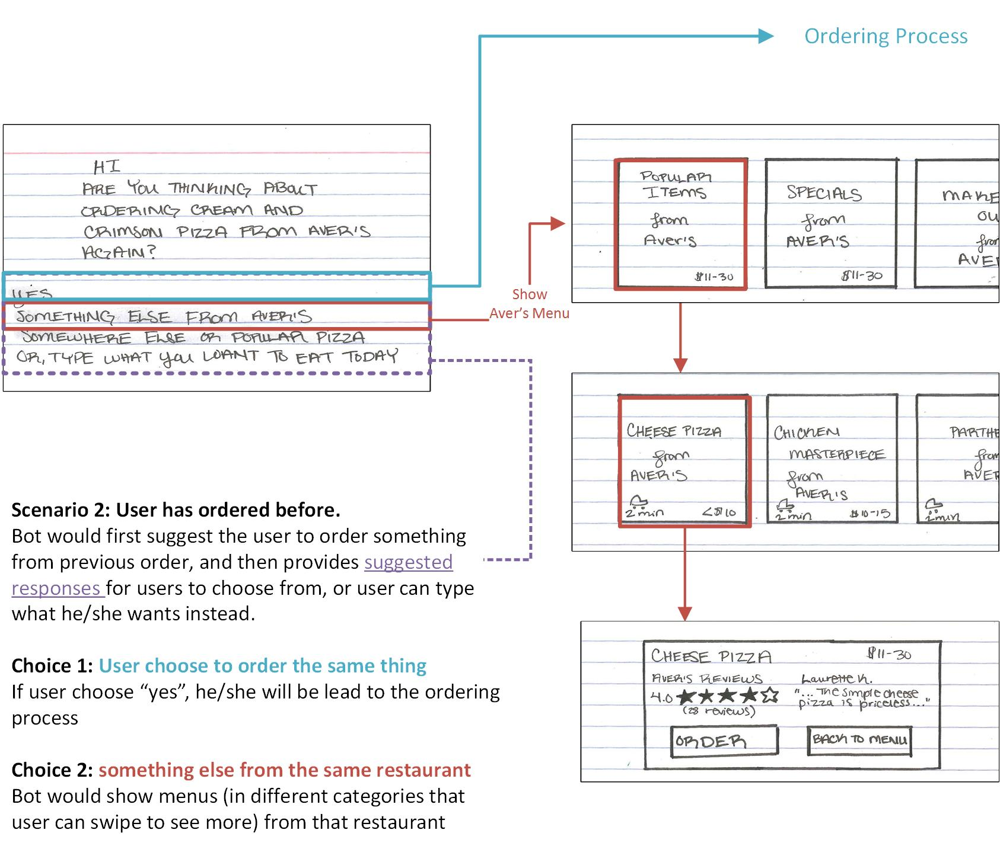
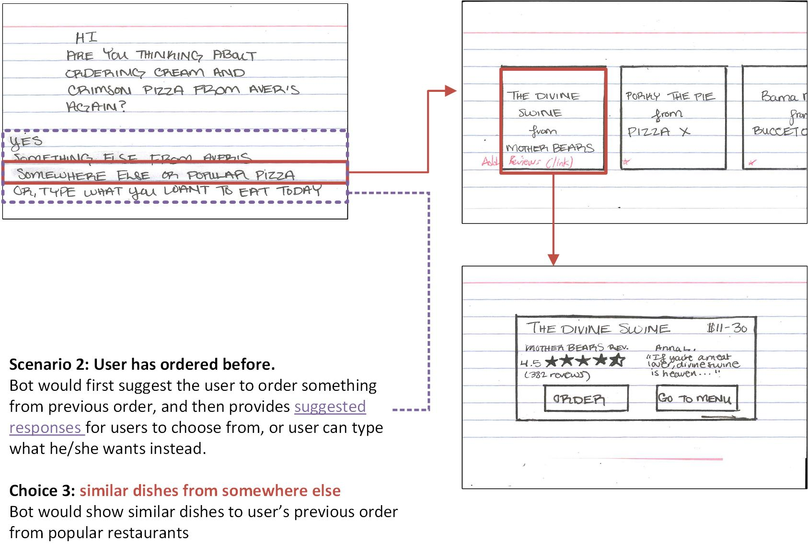
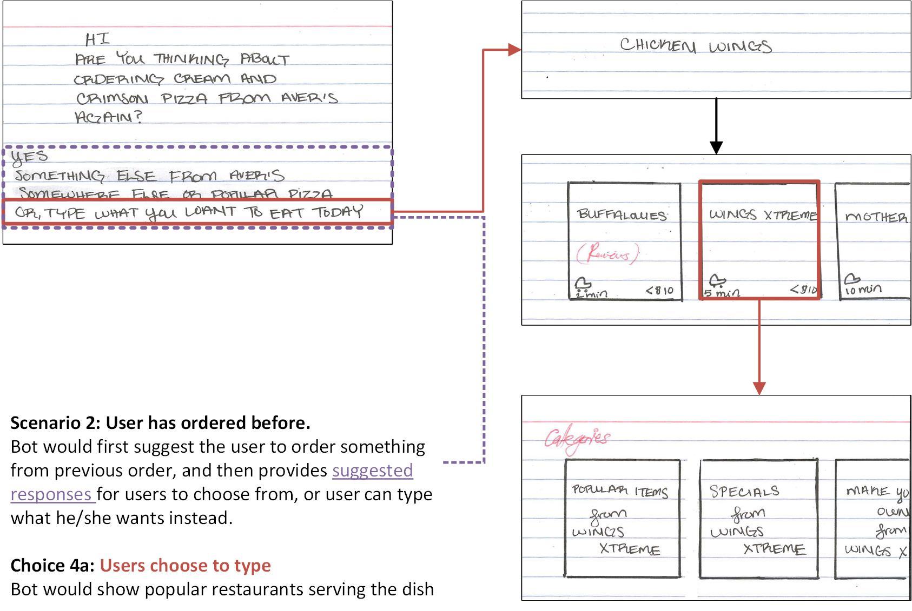
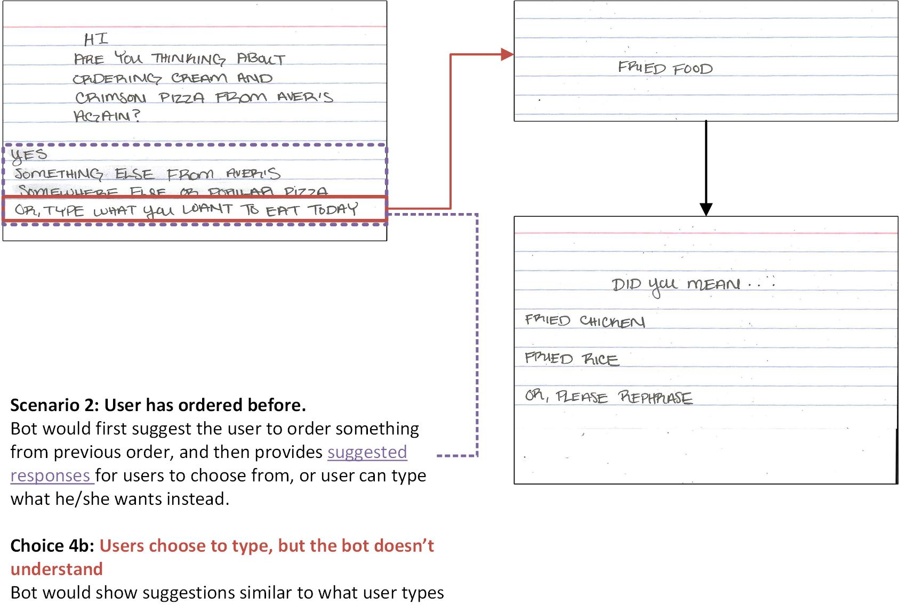
Feedback & Iteration
Usability Testing
After ideation and sketching, we tested our low-fidelity prototype made with notecards with two college students. The goal is to see if any part of the conversation may cause confusion to the users. A few issues we noted during testing:
- Our original design does not put enough emphasis on price or ratings, and users would like to see those information prominently featured.
- Users usaully only type very few words in respons to the bot, which is different than our assumptions.
- While the users appreciate seeing dishes as the result, once they see the restaurant, they would still like to see the menu from the restaurants.
Further Constraints
Due to time limitation and the complexity of the nature of conUI, we decided with our final design, we would like to set further constrains other than the ones given by the prompt.
First, our design would only deal with the process of the bot identifying a specific dish for the users. Any other tasks involved within ordering food online, such as reading through menus or entering payment information, would not be in the scope of our design.
Second, with our presentation, we would only focus on the experience of an returning user. For the reason that is the scenario that can best illustrate our idea of taking advantage of a user's past orders information to acheive personalization.
Iteration
After receving feedback from potential users and our peers after presentation, we gathered as a team and discussed where we wanted to move forward. The most significant issue we tried to address during the itration phase (one week) of the project was the display of dish information, including price, rating, review, etc.
Below are some of the alternatives we came up with.
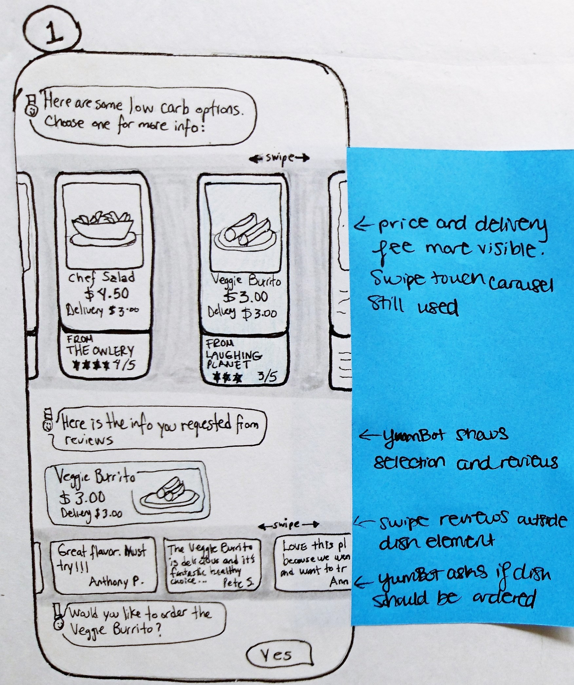
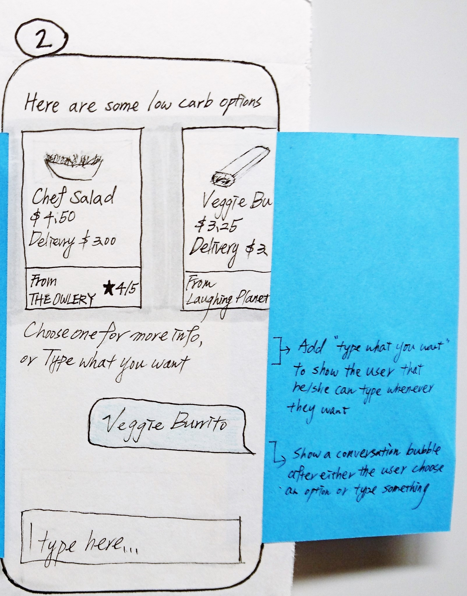
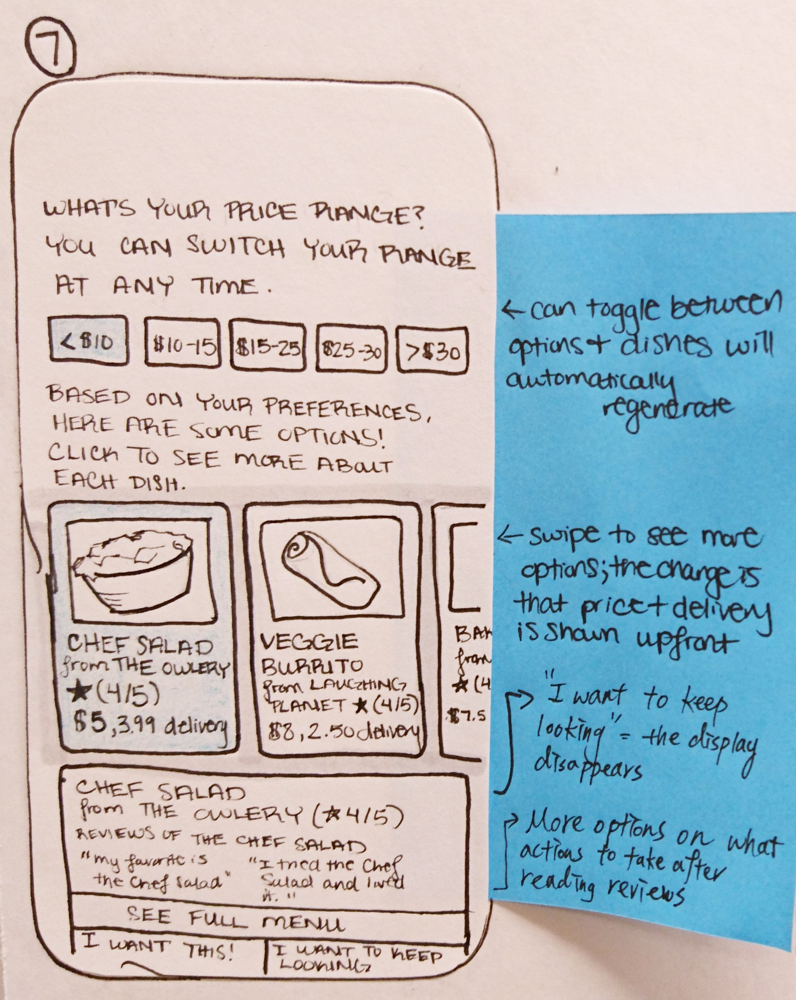
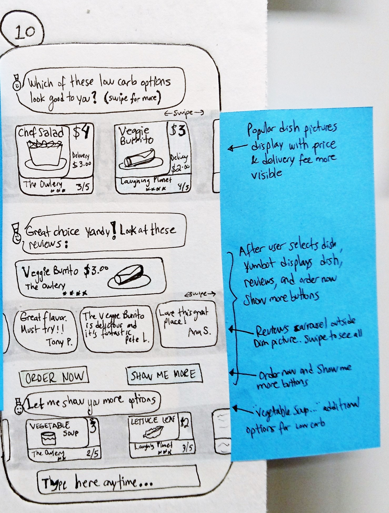
Solution: Yumbot
Below is our solution, Yumbot, presented with a scenario which a college student, Yandy, returns to the app trying to find something with low calories to order.